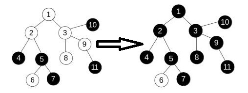

实验任务
\(C\)国家有\(N\)个城市，用\(N-1\)条道路连接，保证任意两个城市连通，整个国家中由两种流通的货币，有的城市使用货币\(A\)币，有的城市用货币\(B\)币，现国王希望统一货币，便于管理。现在只有一种操作：
\(change(v)\)，\(v\)表示国家中的某个城市，该操作可以改变所有城市\(U=\lbrace u|u\)到\(v\)的最短路径上的城市当前所使用的货币都与\(v\)相同\(\rbrace\)的货币类型，如果是\(A\)则变成\(B\)，是\(B\)则变成\(A\)。请问最少需要几次操作，能使整个国家货币统一。
数据输入
第一行包括一个整数\(N(1\leq N\leq 20000)\)，表示城市个数。 第二行为\(N\)个整数\(t_i\)，表示城市的货币类型。\(t_i=0\)表示第\(i\)个城市使用\(A\)货币，\(t_i=1\)表示第\(i\)个城市\(B\)货币类型。然后输入\(N-1\)行，每行包括两个整数\(v_i\)，\(u_i\ (1\leq v_i,u_i\leq N)\)，表示城市\(v_i\)和城市\(u_i\)之间有一条道路。
数据输出
输出一个个数 K，表示需要使用的最小操作数。
| 输入示例 | 输出示例 |
|---|---|
| 2 0 1 1 0 0 0 1 1 2 1 3 2 4 2 5 3 6 3 7 |
2 |
提示
\(change(3)\)： 
源代码
1 |
|
设计思路与复杂度分析
压缩点：根据操作的特征，容易发现，所有点权相同且互相“联通”的点，操作一致。可以考虑将它们压缩成一个点，缩完点之后得到的是一棵黑白相间的树。
考虑一种操作方式：选一个点，从头到尾一直翻转它。对于这样的操作方式，树高决定操作次数。因此，为了让操作次数最少，需要选择一个点，使得树高最小，而这个点称之为树的中心。寻找树的中心方法是：找出树中距离最远的两个点，以这两个点为端点的路径，称之为树的直径，直径中间的那个点就是树的中心。于是题目等价于求出树直径长度Len，最终的答案为\(floor(Len/2)\)。
贪心证明：为何一直翻转树的中心会是最优策略？若每次翻转直径的非叶子结点，缩点之后，结点数减少2。若每次翻转直径的叶子结点，缩点之后，结点数减少1。所以显然优先翻转非叶子结点。要将直径全部变成一种颜色，至少需进行Len/2次操作，结果不会优于一直翻转树的中心策略。
树的直径：（证明有兴趣可以翻翻算法导论）对于树的任意一个结点a，找到距离结点a的最远结点A；找到距离结点A的最远结点B，则A和B所在的路径就是树的直径。
复杂度分析：压缩点可以考虑重新建树时间为\(T1(n)=n\)，但是其实么必要，在找树的直径的时候对于同色的子节点深度不增加即可达到目的。找树的直径时间为\(T2(n)=2\times n\)。所以总时间复杂度为\(T(n)=2\times n=O(n)\)。